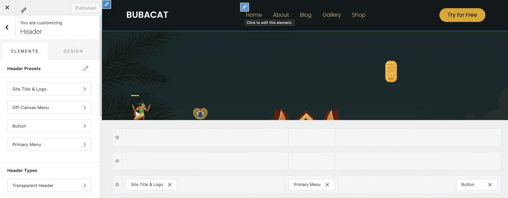
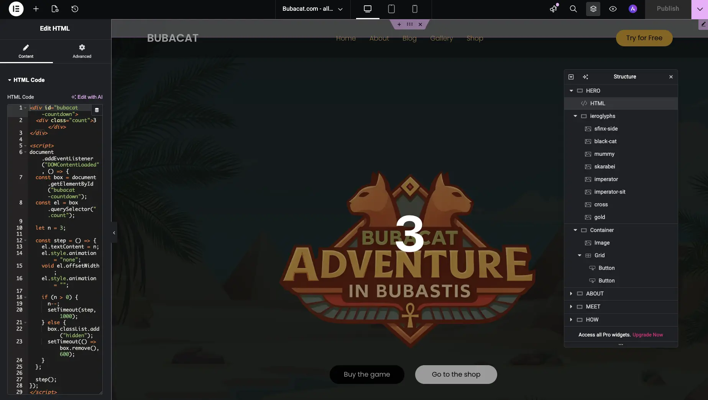
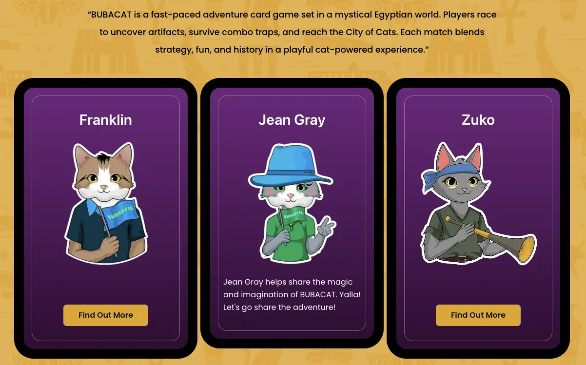
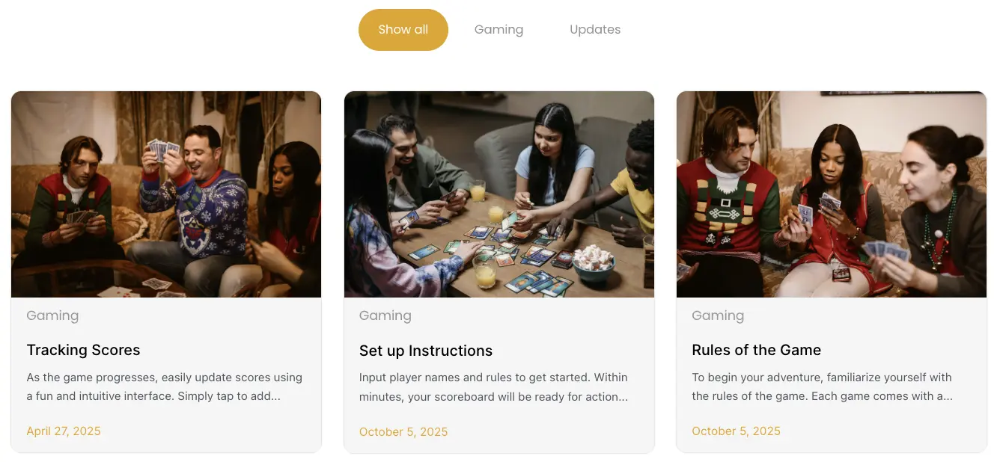
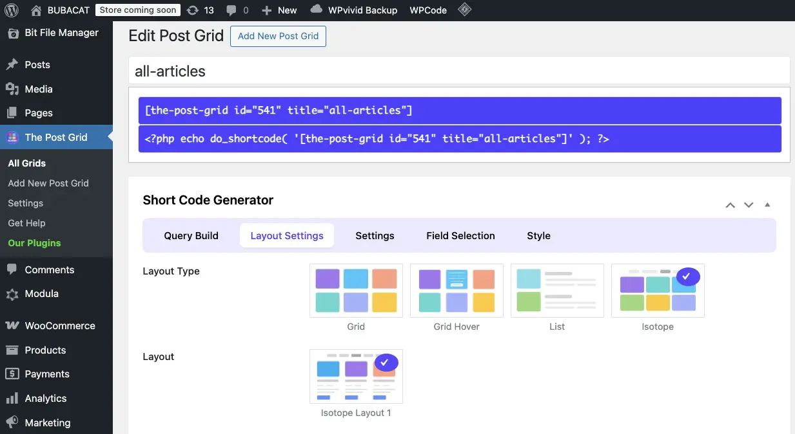
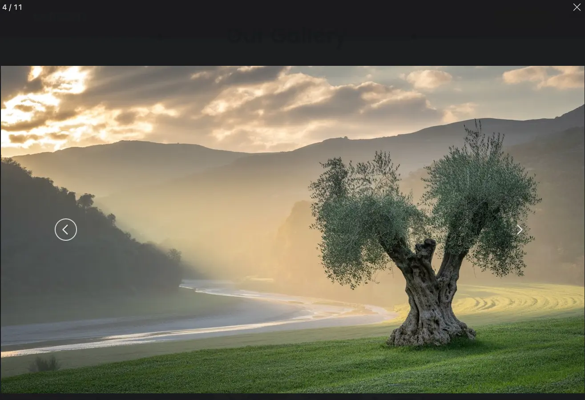
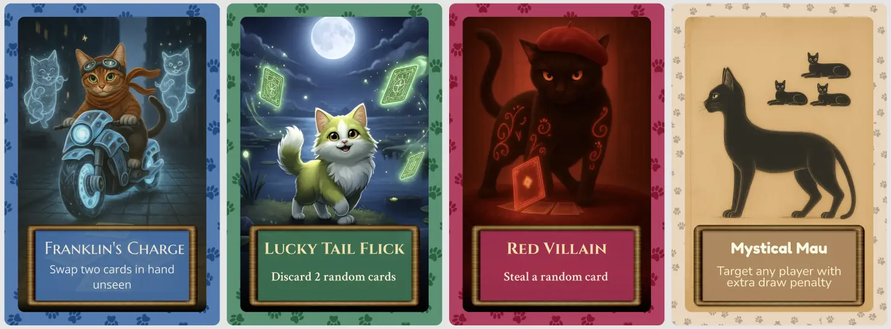
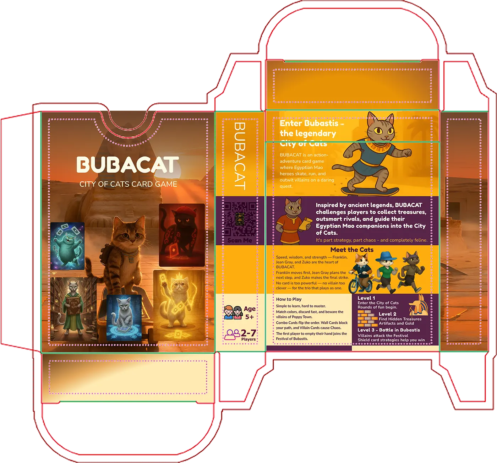

BubacatCity WordPress Site Build
Published on December 6, 2025
Imagine this: ancient Egyptian cats riding bicycles, stealing artifacts, and racing to become the supreme ruler of Bubastis. That’s Bubacat (backup site) – a super fun, family-friendly adventure card game that needed website redesign as vibrant and engaging as their game. Here’s how I brought their digital world to life.

The Goal
- Capture the game’s cheeky Egyptian-cat vibe
- Make it instantly understandable in <10 seconds
- Load blazingly fast (card game buyers are impatient!)
- Prepare clean WooCommerce foundation for the deck + T-shirts, hats, etc.
- Mobile‑first layouts, because most visitors come from social links on phones.
- Space for blog posts, character profiles, a gallery, and a future shop.
Theme Customization & Global Styles
On every new website, the first step I do is always the same: configure the design system within Elementor and Astra. I define global colors, typography scales, and responsive breakpoints before building any sections. This method not only speeds up development but also guarantees visual consistency across all devices — from a 5-inch mobile in Mumbai to a 27-inch Retina display in Berlin.
- Elementor > Site Settings > Global Colors
- Elementor > Site Settings > Global Fonts
- Elementor > Site Settings > Layout > Breakpoints
- (Optional) Appearance / Astra > Customize > Global > Colors (Typography / Container) -- Elementor styles take priority over Astra settings. However, theme-controlled areas like blog archives, headers, and footers use Astra's configuration. If you notice inconsistencies in these areas, double-check your Astra customizer settings.
Header (Logo, Menu, Button)
For this project, I used Astra’s flexible header builder and extended it with a custom child theme. I generated the child theme using a Astra’s official Child Theme Generator, which allowed me to safely add custom CSS without touching the parent files. The goal was to create a transparent header that sticks to the top when scrolling. I achieved it with:
.site-header {
position: sticky;
top: 0;
z-index:
999;
}
#content { margin-top: -92px;
#Your header height }
This simple configuration ensures the header stays visible at all times while blending smoothly with the page background. The setup is fully compatible with Astra’s updates and follows best practices for theme customization.
Hero section
For the hero section I added 8 ierogliphs icons + a script that slowly shows them one by one randomly on the hero section. Since it's taking 2-3 sec to load and display, I added a countdown fade animation to make it look more engaging.
Meet the Cats Section
For the meet the cats section I created 3 cards with 3 cat profiles and 3 buttons "Find out More", and on click I want this button to dissapear and show the cat's description. So I created container (div) = .reveal-container class, and inside it put the heading = .hidden-text class, and button = .reveal-text class. To make it work I used javascript code, that on click changes the style of display to none, and heading display to block. I pasted this code inside footer, using Code Snippets Plugin. Here is the code:
#script start
document.addEventListener("DOMContentLoaded", function () {
document.querySelectorAll(".reveal-container").forEach((container)
=> {
const btn = container.querySelector(".reveal-btn");
const hidden = container.querySelector(".hidden-text");
if (btn && hidden) {
btn.addEventListener("click", () => {
btn.style.display = "none";
hidden.style.display = "block";
});
}
});
});
#script end
Blog Section
To make the blog section I used The Post Grid Plugin for WordPress and customized css to match the site style.

Gallery Section
 And as for the Gallery I used Modula Image Gallery – Photo Grid. I also decided to add option to change images in the gallery by Arrows key press (left arrow - previous image, right arrow - next image). To make it work I used javascript code, that on keydown clicks left or right arrow. I pasted this code inside footer, using Code Snippets Plugin. Here is the code:
#script start
document.addEventListener('keydown', function(e) {
const container = document.querySelector('.modula-fancybox-container');
if (!container) return;
// check if container is visible
const style = window.getComputedStyle(container);
if (style.display === 'none' || style.visibility === 'hidden' || style.opacity === '0') return;
const next = container.querySelector('.f-button.is-next');
const prev = container.querySelector('.f-button.is-prev');
if (!next || !prev) return;
if (e.key === 'ArrowRight') next.click();
if (e.key === 'ArrowLeft') prev.click();
});
#script end
Shop
For the shop I used WooCommerce plugin but haven't configured the cart and checkout yet, because currently finishing the cards and box designs so later to print it and be ready to sell. The playing cards will look like this:
And the Box design is already sent for printing as well, and hopefully will look like this when printed:
Final Result
BubacatCity uses fast layouts, compressed images, and simple Elementor sections. The design stays consistent across all devices and supports the game look of the project.
NoCap E-Commerce Project

Football Academy site example

Japalandia work abroad Landing Page